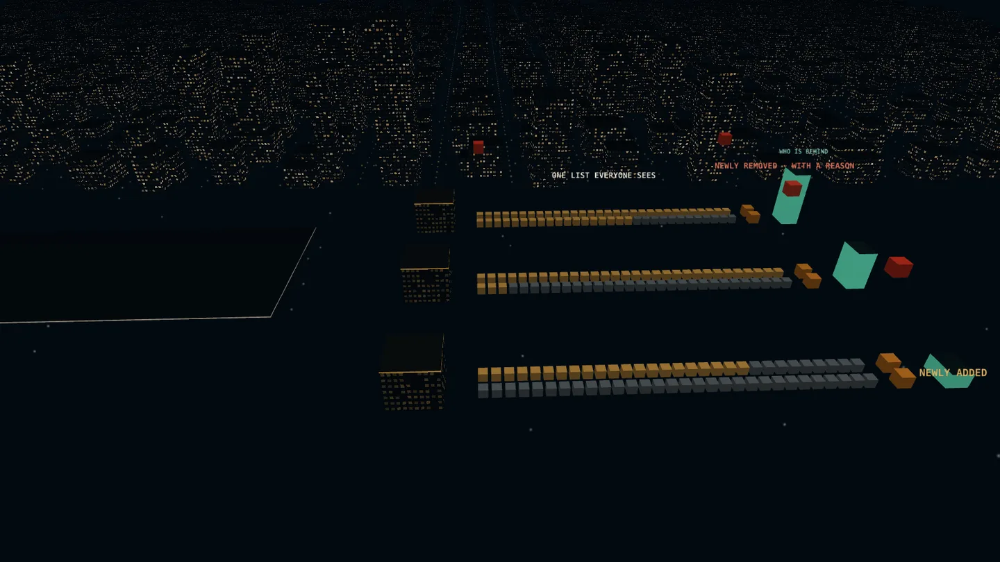
Refinitiv Labs · London Stock Exchange Group · Aug – Dec 2021 · 9 min read
They asked for automatic data collection. What they needed was a shared list and a way to see who was doing what.
Why this case is here: Questioning the brief before building it.
SUS 89 in testing, against a target of 71 to 76.
Prototype tested with users
- Problem. About 200,000 private-company records a year, kept in one spreadsheet by a team that had missed its deadline for several years. They asked Labs to automate the data collection.
- What I did. Interviewed 6 content managers and 5 analysts, and surveyed 24 people on how their year splits. The list and the coordination around it took about 40% of the managers' year, so we reframed the project around the list, agreed a quality bar before design, cut the first release to the managers, and tested two features of an internal web app with users.
- Result. SUS 89 against a target of 71–76, adoption interest 4.6 out of 5, and every tester finished every task. A tested prototype, not a launch. Managers said it would save them weeks a year; that is their estimate, and I present it as one.
The story in 9 chapters · 9 min read
- 01The brief asked for faster horses.
- 02The time didn’t go to collecting. It went to the list, and to each other.
- 03The question we answered instead
- 04From hypotheses to a first release
- 05Build the year’s list once. Every team sees the same one.
- 06Feature 02: what “more collaborative” means
- 07Both scores cleared the bar we set before design.
- 08How I led
- 09What I'd do differently
- UI Designer, Refinitiv Labs; ran the UX end to end
- Product manager, data scientist, 2 engineers
- Aug – Dec 2021
- Prototype tested with users
- System Usability Scale89Tested
- Adoption interest4.6 / 5Tested
01 / 09 · The brief
The brief asked for faster horses.
Refinitiv, now part of the London Stock Exchange Group, sells financial data to more than 40,000 clients in 190 countries. Part of it is profiles of private companies likely to raise capital soon, and a global content team keeps about 200,000 of them current every year, in one Google spreadsheet.
- ~200,000
- company profiles updated a year, in one spreadsheet
- RecordContent team
The team had missed its deadline for several years running, and the business was losing ground to competitors because of it. In July 2021 they asked Labs for an automatic data-collection system. A reasonable request, and an expensive one to build if collection isn't where the time goes. So before agreeing, we asked the team to show us the work.
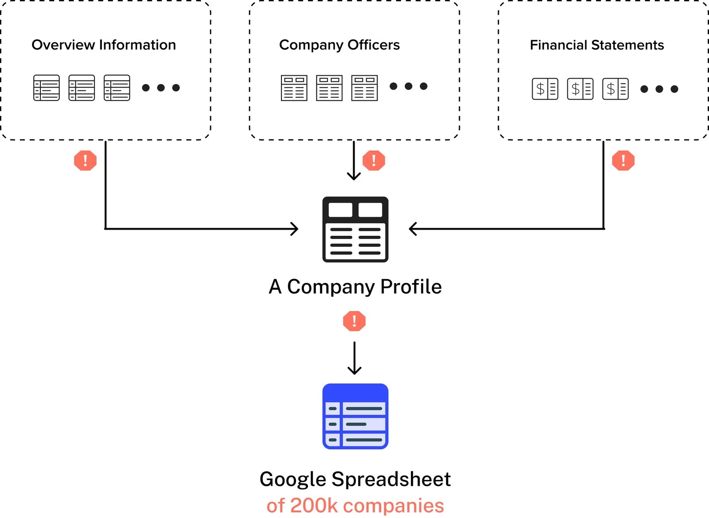
02 / 09 · Where the year went
The time didn’t go to collecting. It went to the list, and to each other.
We interviewed 6 content managers and 5 analysts, then asked 24 people how their working year splits. For the managers, company data was about a quarter of the year. Building the list and coordinating around it took about 40%.
- 18.2%
- of managers’ year building and keeping the list
- EstimateSurvey of 9 managers
- 22.2%
- on collaboration and progress updates
- EstimateSurvey of 9 managers
- 24.2%
- on company data, the part they asked to automate
- EstimateSurvey of 9 managers
| Study | Who | What we asked |
|---|---|---|
| Stakeholder interviews | The global content team | Why the work ran late, and what automation was meant to fix |
| User interviews | 6 content managers, 5 content analysts | Show us how you collect and update company information, including recent changes and new sources |
| Survey | 9 managers, 15 analysts | How your working year splits across tasks |
| Share of the working year | 9 content managers | 15 content analysts |
|---|---|---|
| Company data updates | 24.2% | 58.8% |
| Building and maintaining the yearly list | 18.2% | not listed |
| Collaboration and progress updates | 22.2% | 12.6% |
| Quality checks | 25.6% | 21.4% |
| Other tasks | 9.8% | 7.2% |
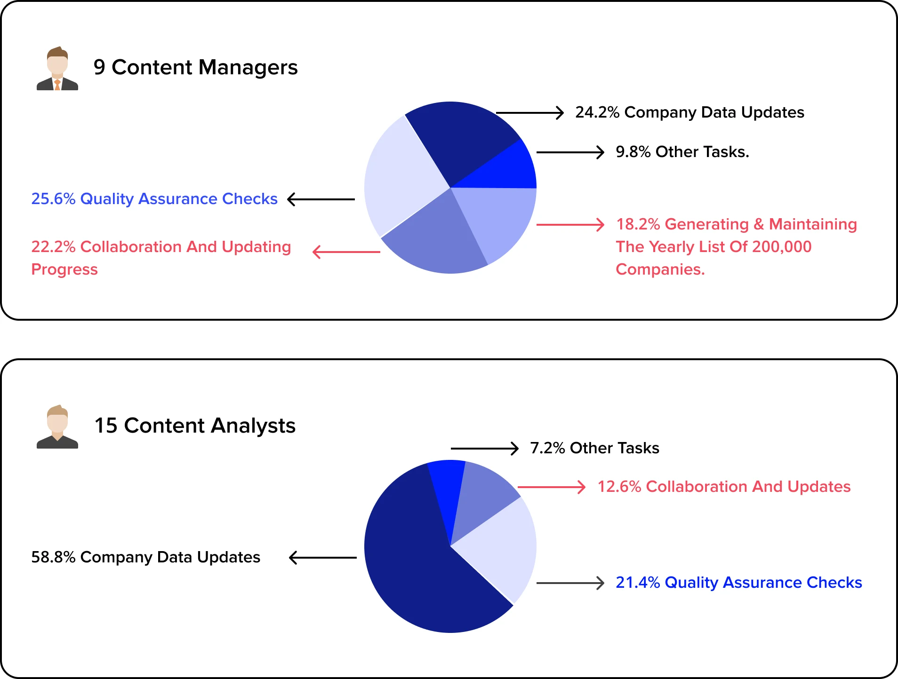

| Finding | What it meant |
|---|---|
| 5 managers struggled to coordinate with each other ("a huge amount of work") | Collaboration was a cost nobody had named |
| 4 managers found it hard to build and track changes to 200,000 companies in one spreadsheet | The list itself was the bottleneck |
| 7 people wanted more time for quality checks, "a better use of time" | Freeing time mattered more than collecting faster |
Analysts did spend most of their year on company data, but some sources, like magazines, would always need a person. Automation couldn't remove that work, and for the managers it wasn't where the time went.
Two archetypes, not personas
We didn't write full personas. To save time, we built two archetypes straight from the interviews: what each role has to get done, and what gets in its way. A role was all the design needed at that stage.
| Archetype | Jobs to be done | Struggles |
|---|---|---|
| Content manager | Identify and track progress on 200,000 company records a year; coordinate with the other sub-teams | Tracks the progress of 200,000 companies by hand in a spreadsheet; too much time spent coordinating with sub-teams |
| Content analyst | Update content for 200,000 companies a year; track progress and run quality checks with others | A huge amount to update every year; no shared way to track progress or work together |
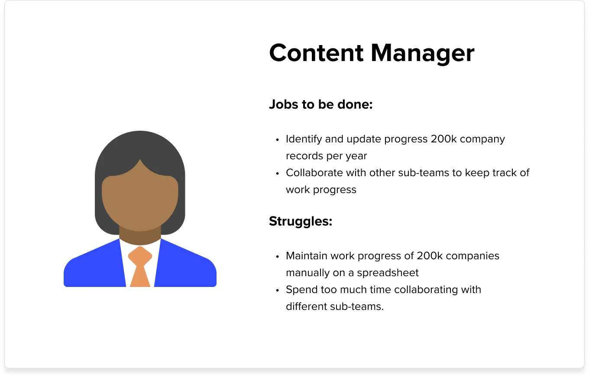
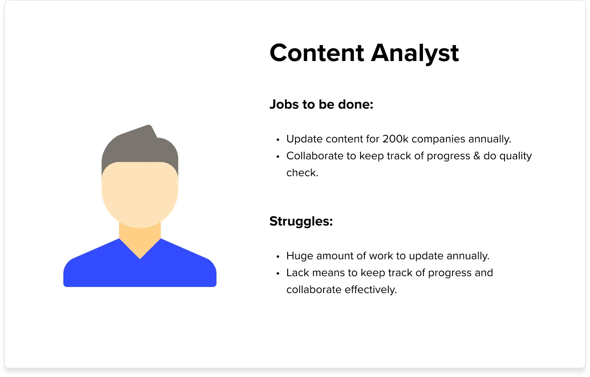
The year, as a list
About 200,000 companies a year, in one spreadsheet.
Faster collection would have filled it sooner. It would not have made it any easier to share.
Three teams worked from the same list.
The OA, OD and Fundamentals teams each had their share. Nobody could easily see what had changed, or who was behind.
One list everyone can see.
A lane per team, new companies flagged as they arrive, every removal with a reason, and progress by team. The cubes are an illustration, not data.
- About 200,000 companies a year, in one spreadsheet. Faster collection would have filled it sooner. It would not have made it any easier to share.
- Three teams worked from the same list. The OA, OD and Fundamentals teams each had their share. Nobody could easily see what had changed, or who was behind.
- One list everyone can see. A lane per team, new companies flagged as they arrive, every removal with a reason, and progress by team. The cubes are an illustration, not data.
03 / 09
The question we answered instead
How might we help the content team manage and update 200,000 company records a year, and work together on them, so they meet their target? Two parts: a list that is easy to build, update and track, and better collaboration between content managers.
Decision
What to build
- Options
- Automatic data collection, as asked, or list management and collaboration
- We chose
- List and collaboration. For the managers, that's where the time went, and some sources would always need a person.
The bar, agreed before design. Labs had its own standards, so we used them, and settled what counted as good before anyone saw a screen.
| Measure | Target | Where it came from |
|---|---|---|
| System Usability Scale | 71–76 | Scores from the three previous Labs projects |
| Adoption interest | 4.0 / 5 or higher | The Labs standard |
| Efficiency | List work from weeks to days | The project goal |
04 / 09
From hypotheses to a first release
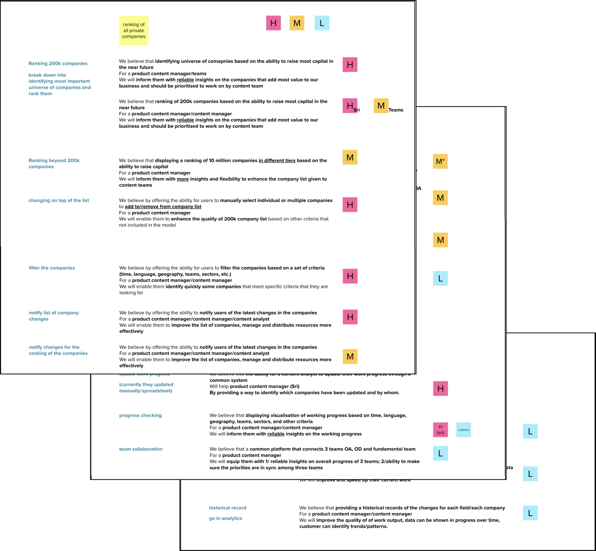

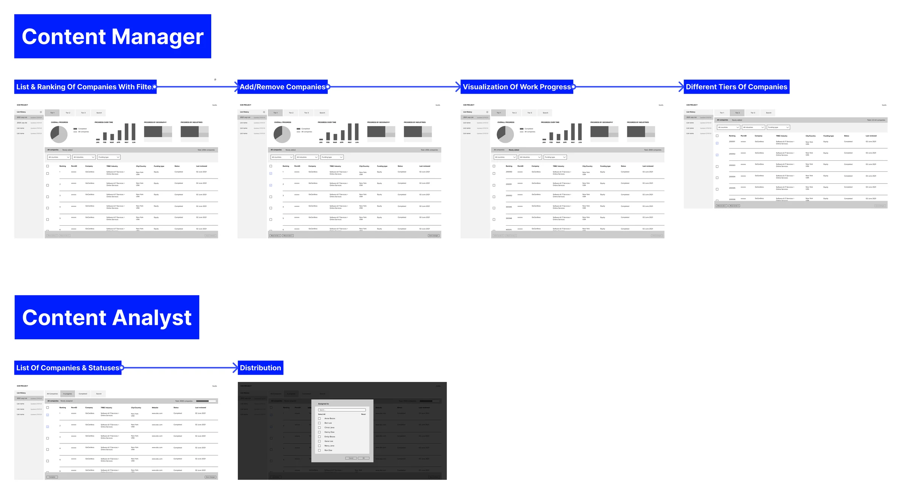

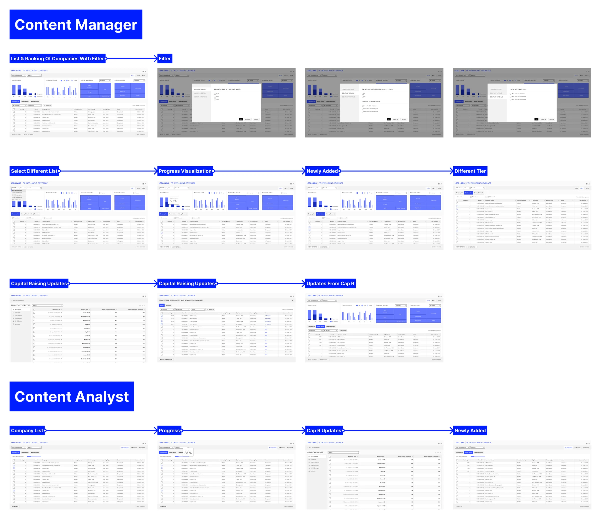

Cutting scope so a first release could land
The hi-fi review grew the project. We ran a prioritisation workshop with product and the innovation lead and sorted every feature by impact and effort. Now: the content manager, with three jobs: build and manage the list of 200,000, track progress, and see analytics. Next: the analyst archetype. Later: work distribution, quality checks and profile updates.
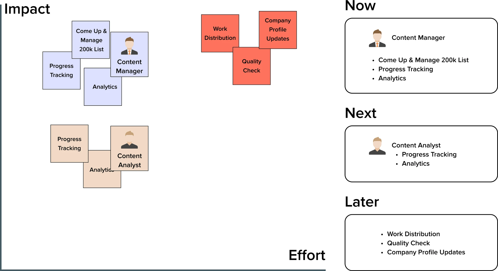

Decision
Who the first release serves
- Options
- Managers and analysts, or managers only
- We chose
- Managers first, so a smaller release could land. The cost we accepted: analysts spend 58.8% of their year on company data, and the first release did nothing for that. It went to the managers, where the list and the coordination problems sat.
05 / 09 · Feature 01
Build the year’s list once. Every team sees the same one.
A manager imports the year’s list from the capital-raising model or from a file, and progress by team, month, region and sector appears as soon as it’s in. Built on the Labs design system, then tested with 5 content managers.
| What testers found | What changed |
|---|---|
| 3 of 5 couldn't find Import straight away | Import moved to the top of the page, with instruction screens |
| 3 of 5 asked for a way to share the list with other teams | A Download button next to Import |
| 2 of 5 found the "Advanced" label unclear | Renamed "Filter More" |
| 2 of 5 asked to see where each company came from | A Source column, to judge how well each data source works |
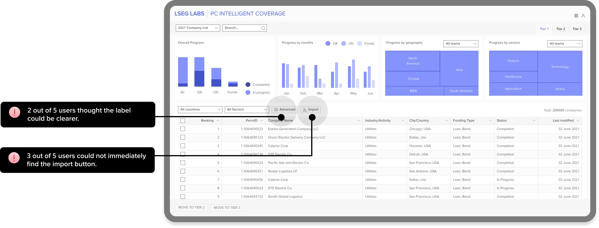

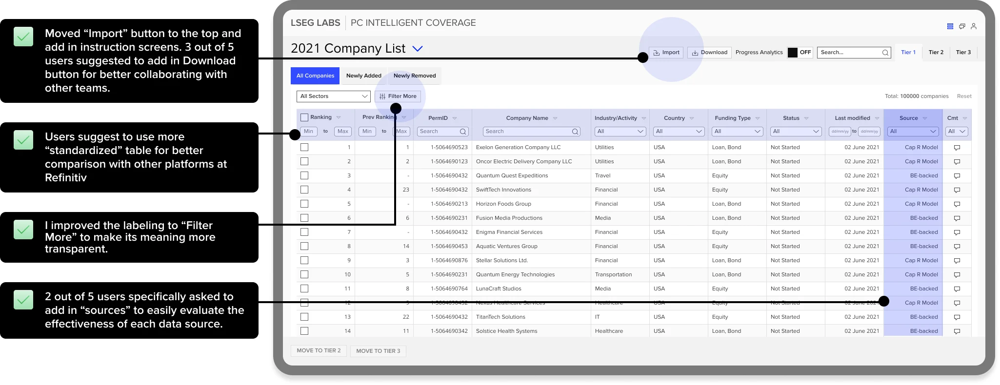

Decision
The table
- Options
- A new design, or the standard Refinitiv table
- We chose
- The standard table. Testers asked for a table like the other Refinitiv platforms, so they could compare the list across them. Their habit won over a fresh layout.
06 / 09
Feature 02: what “more collaborative” means
4 of 5 testers said the prototype could be more collaborative. Nobody can build "more collaborative", so we started from the plain meaning of the word and went back to the patterns in the research.
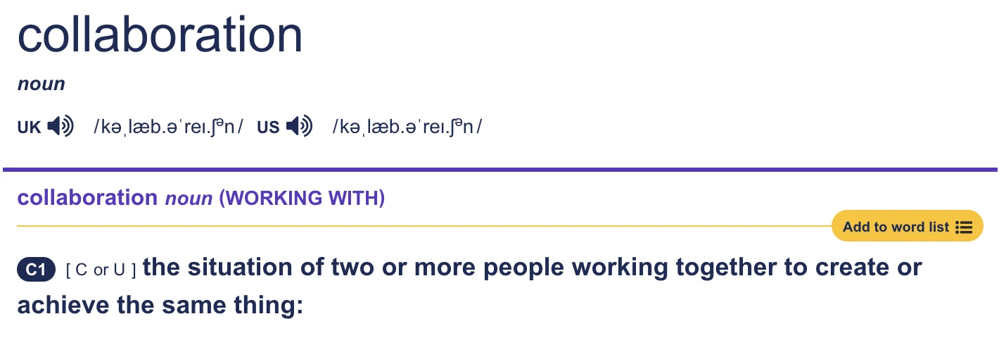
For managers sharing one list of 200,000 companies, that meant three things they need to know: what changed, why it changed, and how far along everyone is. So instead of one "collaboration" feature, we built three, each traced to a finding.
| Question | What we built | Why |
|---|---|---|
| What changed? | Tabs for newly added and newly removed companies | 2 of 5 asked how to find a few new companies in a list of 200,000 |
| Why did it change? | A comment on every addition, removal or edit, with who and when, visible to the team | Managers spent 22.2% of their year on collaboration and progress updates |
| How far along are we? | A status on every company, plus progress charts by team, month, region and sector that can be switched on or off | 5 managers struggled to coordinate with each other |
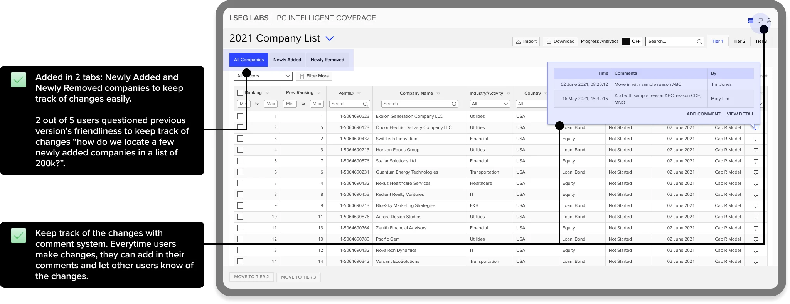

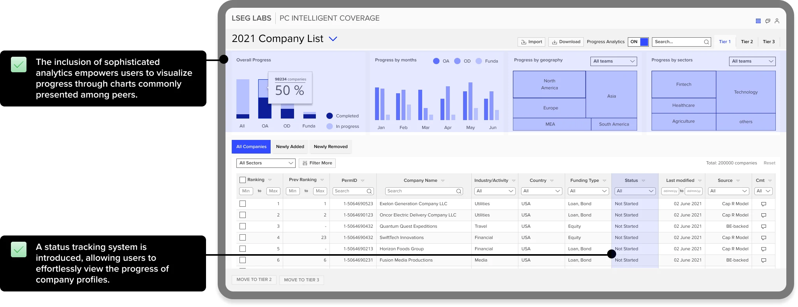

07 / 09 · Results
Both scores cleared the bar we set before design.
A prototype tested with small groups, 5 testers and 9 survey answers. It shows the design was usable and wanted. It doesn’t show production impact.
- 89
- System Usability Scale, against a 71–76 target; 70 earlier in the project
- TestedSurvey of 9 users after the final prototype
- 4.6 / 5
- adoption interest, against 4.0; every tester said they wanted to adopt it
- TestedAsked at the end of each session
- 5 of 5
- testers completed every task
- TestedModerated test
- 2 min 23 s
- average task time
- TestedOn the prototype
"Easily cuts down half of my time, saves weeks of my annual workload!"
A content manager on the OA team, after testing
Read these carefully. The efficiency goal, list work from weeks to days, was never timed. Two content managers said it saves them weeks of their annual workload; that is their own estimate, not a measurement. The main drawback testers raised: some sources, like magazines, still have to be updated by hand.
08 / 09
How I led
- Questioned the brief before accepting it. The team asked for a solution. We asked them to show us the work, and the survey put numbers on where the year went.
- Agreed the bar before design. SUS 71–76 from three earlier Labs projects, and adoption interest of 4.0, so what counted as good was settled before anyone saw a screen.
- Held scope. When the hi-fi review grew the project, we ran a prioritisation workshop with product and the innovation lead and moved a whole user group to the next release, so the first one could land.
- Turned vague feedback into features. "More collaborative" became three things a manager can check, each tied to a finding.
- Kept a wide group aligned. My first project with this many internal and external stakeholders. I kept them together with one-to-ones and review rounds, and brought data science and engineering in from the hypothesis stage.
09 / 09
What I'd do differently
I'd time the old way before designing the new one. The efficiency goal was "weeks to days", but we never measured how long building and tracking the list took in the spreadsheet, so the only evidence for it is managers saying it saves weeks. Now I record a baseline task time in the first research round.
The team came to us asking for speed. Next time, I'd know how slow the old way was before promising a faster one.
Screens are from the tested prototype with sample data. Research numbers, decisions and test results are from the project; workload savings are users' estimates.